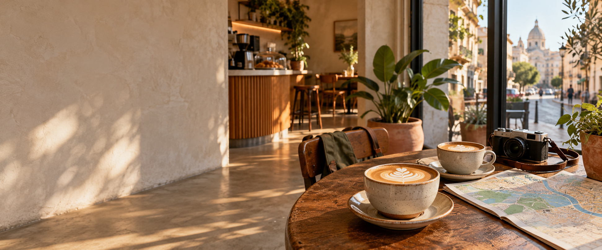

Start with distance
Every list begins with the cafes closest to your current or chosen location.

A coffee travel companion
Find the independent cafes worth stepping off your route for—ranked by distance, then refined by what makes a stop memorable.
Previewing New York, NY with prototype listings.
Near you now
Showing cafes nearest to New York, NY.
Coffee cities
The BeanBound method
Roast style still matters. On the road, where a cafe is—and whether it is worth the stop—matters first.
Every list begins with the cafes closest to your current or chosen location.
Filter for laptop space, pastries, in-house roasting, or the quality of the milk program.
Visual review galleries make latte art and cafe atmosphere part of the decision.